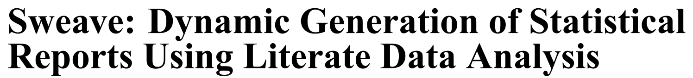

- Literate Programming - The
WEBSystem - Dynamic Documentation -
SWEAVE - The Next Generation -
knitr+rmarkdown - Universal Document Converter -
Pandoc Rmarkdown"HUB" via RStudio
2017-09-18
Outline
The WEB System by Donald Knuth
The first published literate programming environment was WEB. Donald Knuth introduced it back in 1981 combining his TeX typesetting system with the Pascal programming language.

"I chose the name
WEBpartly because it was one of the few three-letter words of English that hadn’t already been applied to computers. But as time went on, I’ve become extremely pleased with the name, because I think that a complex piece of software is, indeed, best regarded as a web that has been delicately pieced together from simple materials. … If we express a program as a web of ideas, we can emphasize its structural properties in a natural and satisfying way."http://www.literateprogramming.com/knuthweb.pdf
Funnel Web Tutorial Manual by Ross N. Williams
There are various implementations of the literate programming concept, one of which is Funnel Web by Ross N. Williams

"A traditional computer program consists of a text file containing program code. Scattered in amongst the program code are comments which describe the various parts of the code.
In literate programming the emphasis is reversed. Instead of writing code containing documentation, the literate programmer writes documentation containing code. … The "program" then becomes primarily a document directed at humans, with the code being herded between "code delimiters" from where it can be extracted and shuffled out sideways to the language system by literate programming tools."
http://www.literateprogramming.com/fwtut.pdf
SWEAVE by Friedrich Leisch

What is Sweave?
"Sweave is a tool that allows to embed the R code for complete data analyses in latex documents. The purpose is to create dynamic reports, which can be updated automatically if data or analysis change. Instead of inserting a prefabricated graph or table into the report, the master document contains the R code necessary to obtain it. When run through R, all data analysis output (tables, graphs, etc.) is created on the fly and inserted into a final latex document. The report can be automatically updated if data or analysis change, which allows for truly reproducible research."
Friedrich Leisch. Sweave: Dynamic generation of statistical reports using literate data analysis. In Wolfgang Härdle and Bernd Rönz, editors, Compstat 2002 - Proceedings in Computational Statistics, pages 575-580. Physica Verlag, Heidelberg, 2002. ISBN 3-7908-1517-9.
The next evolution <- knitr

In 2012 Yihui Xie, created and released the knitr package for R to extend the capabilities of SWEAVE beyond LaTeX.
"The knitr package was designed to be a transparent engine for dynamic report generation with R, solve some long-standing problems in Sweave, and combine features in other add-on packages into one package."
https://yihui.name/knitr/
The next evolution <- ... + rmarkdown

In 2014, RStudio released
rmarkdownto extend themarkdownlanguage originally intended to write documents for the "web" (i.e. HTML).https://daringfireball.net/projects/markdown/syntax rmarkdownleveragesPandoc("universal document converter")http://pandoc.org/index.html to convert between formats: from HTML (readable by web browsers) to DOC (such as from Microsoft Word or Google Docs) to ODT (Libre Office) to PDF (portable document format) to others like EPUB (e-books), HTML5 slide shows (slidy, ioslides), and TeX based documents and slides (Beamer).
Pandoc https://pandoc.org/
…often called the Swiss-Army knife for converting files from one format to another. Pandoc can convert documents in markdown, reStructuredText, textile, HTML, DocBook, LaTeX, MediaWiki markup, TWiki markup, OPML, Emacs Org-Mode, Txt2Tags, Microsoft Word docx, LibreOffice ODT, EPUB, or Haddock markup to
- HTML formats: XHTML, HTML5,Slidy, reveal.js, Slideous, S5, DZSlides.
- Word processor formats: Microsoft Word docx, OpenOffice/LibreOffice ODT, OpenDocument XML
- Ebooks: EPUB version 2 or 3, FictionBook2
- Documentation formats: DocBook, TEI Simple, GNU TexInfo, Groff man pages, Haddock markup
- Page layout formats: InDesign ICML
- Outline formats: OPML
- TeX formats: LaTeX, ConTeXt, LaTeX Beamer slides
- PDF via LaTeX
- Lightweight markup formats: Markdown (including CommonMark), reStructuredText, AsciiDoc, MediaWiki markup, DokuWiki markup, Emacs Org-Mode, Textile
- Custom formats: written in lua.
The Rmarkdown "HUB" via RStudio

Next in Lesson 03 …
Reproducible Principles & Practices
plus
Examples of Reproducible Documents & Templates